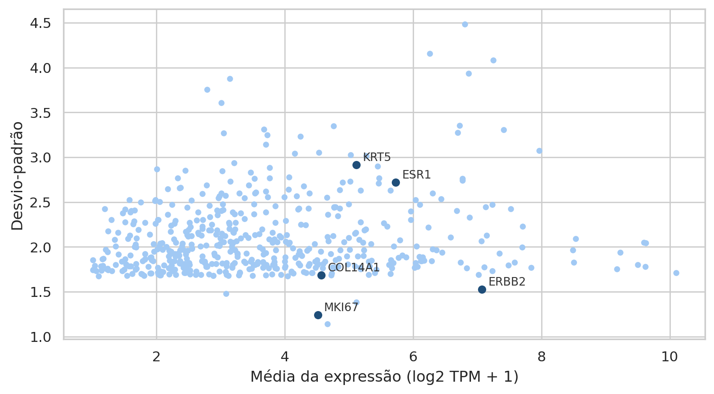
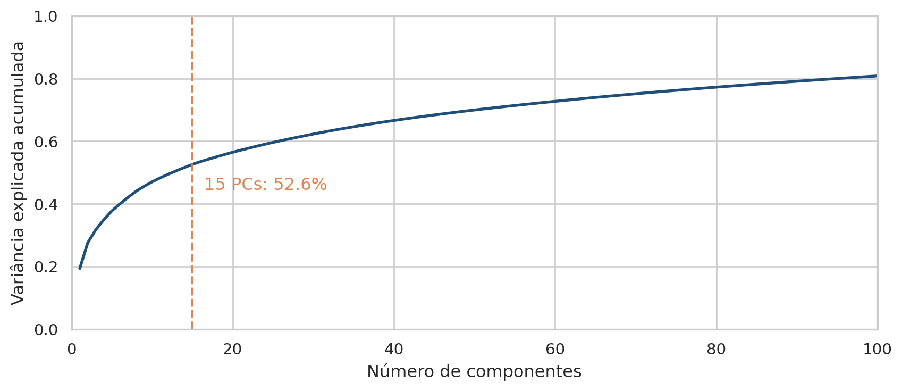
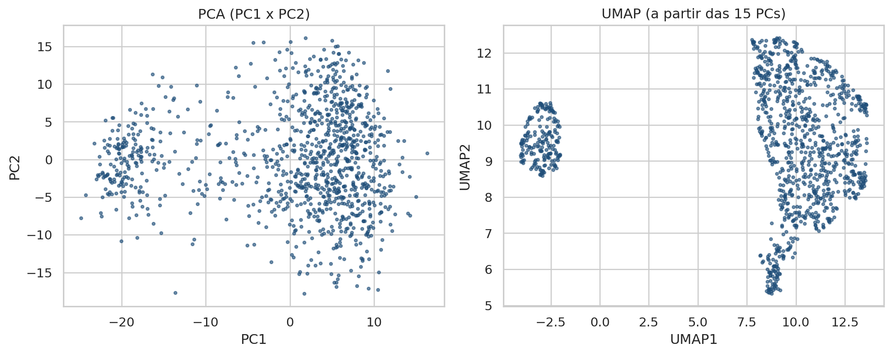
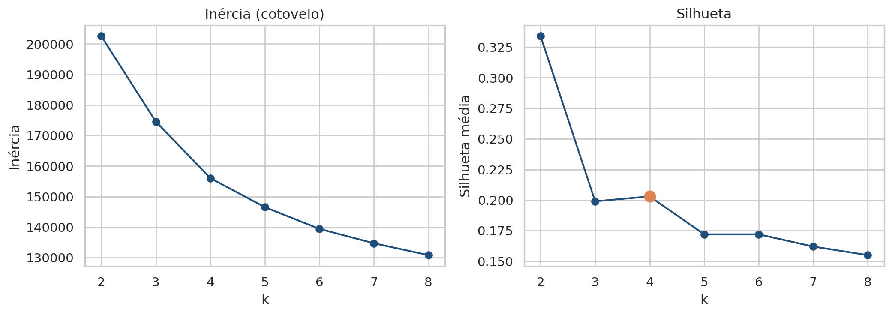
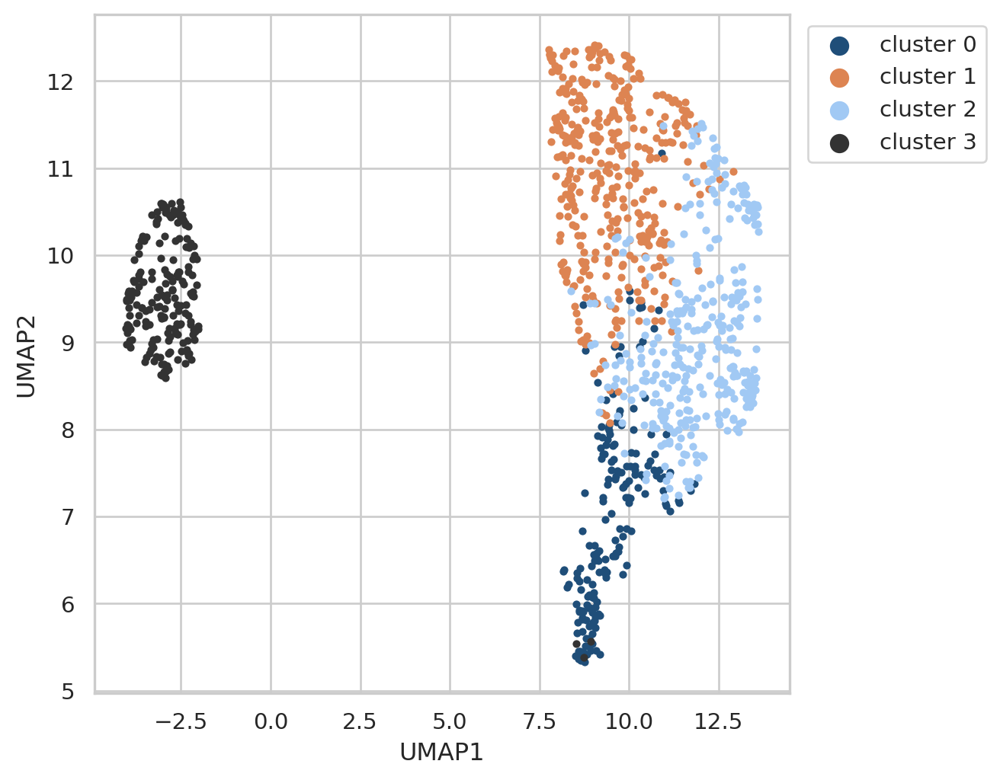
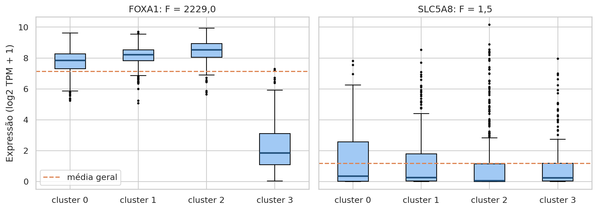
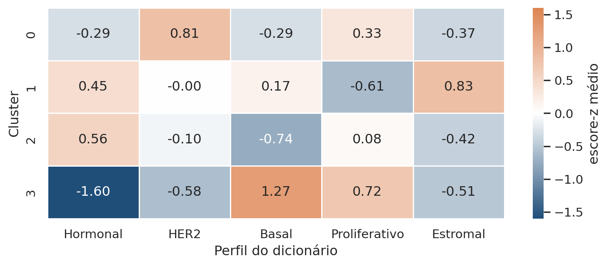
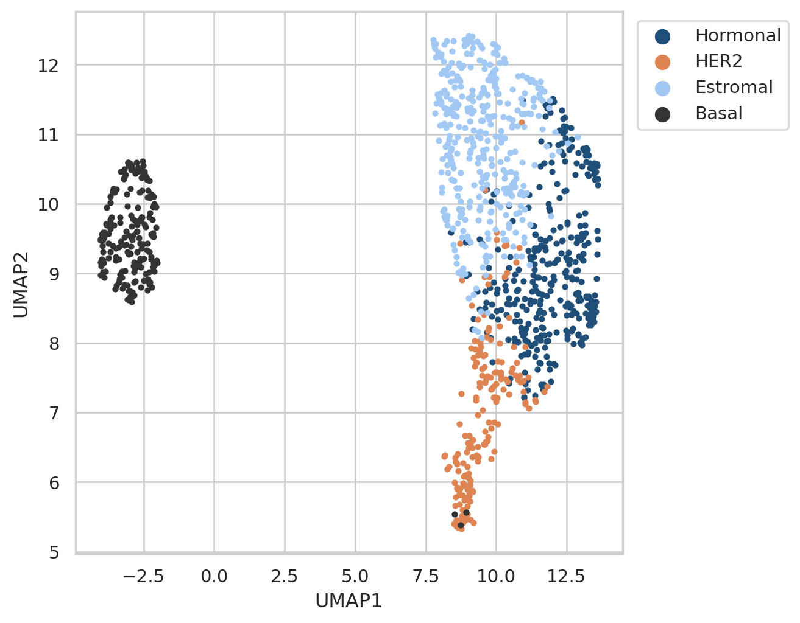
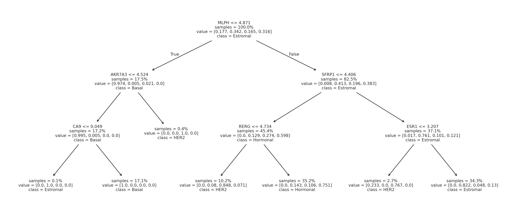
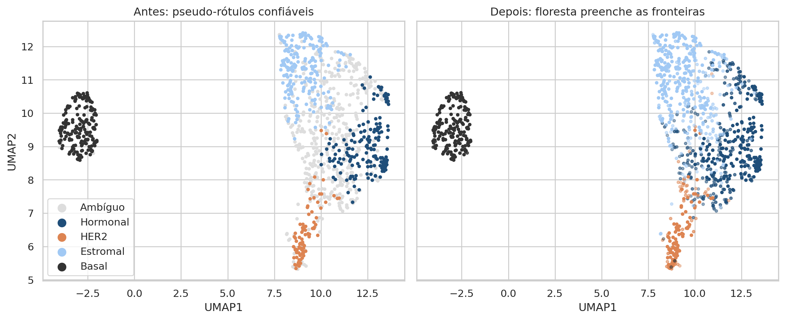

# Importa as bibliotecas e define o tema dos gráficos
import json
import numpy as np
import pandas as pd
import seaborn as sns
import matplotlib.pyplot as plt
from matplotlib.colors import LinearSegmentedColormap
from sklearn.cluster import KMeans
from sklearn.decomposition import PCA
from sklearn.ensemble import RandomForestClassifier
from sklearn.feature_selection import f_classif
from sklearn.metrics import (
adjusted_rand_score,
pairwise_distances,
silhouette_score,
)
from sklearn.model_selection import (
StratifiedKFold,
cross_val_score,
)
from sklearn.preprocessing import StandardScaler
from sklearn.tree import (
DecisionTreeClassifier,
plot_tree,
)
from umap import UMAP
sns.set_theme(style="whitegrid", palette="colorblind")Aula 11 - Aprendizado Não Supervisionado
Motivação
Na regressão linear, cada bairro chegava com a resposta certa: o valor das casas. O modelo aprendia a ir dos atributos até essa resposta, e o erro em dados novos dizia se ele tinha aprendido bem. Esse é o aprendizado supervisionado. Mas boa parte dos dados do mundo chega sem resposta nenhuma. Ninguém rotulou os clientes de uma loja por perfil de compra, nem os documentos de um arquivo por assunto, nem os tumores de um hospital por tipo molecular.
Esta aula trabalha com uma tabela assim: 1.095 tumores de mama, cada um descrito pela expressão de 505 genes, e nenhuma coluna de rótulo. Tratamos os genes como atributos numéricos quaisquer, quase anônimos. A biologia aparece só em dois momentos: uma contextualização no início e, no fim, um dicionário curto que traduz alguns genes em perfis. A pergunta é se os próprios dados se organizam em grupos e, se sim, como dar nome a esses grupos e transformá-los em rótulos para treinar um classificador.
O caminho tem quatro etapas, todas geométricas: colocar os atributos na mesma escala, projetar 505 dimensões em poucas, particionar as amostras em torno de centroides e, por fim, converter a partição em rótulos confiáveis. É o ciclo completo do aprendizado não supervisionado ao supervisionado.
Dá para criar rótulos a partir de dados que não têm nenhum?
Objetivos de aprendizagem
Ao final deste roteiro, você será capaz de:
- Explicar por que a escala dos atributos muda o resultado da PCA e do K-means e padronizá-los com o
StandardScaler. - Reduzir a dimensionalidade com PCA para modelagem e com UMAP para visualização, justificando o papel de cada um.
- Agrupar amostras com K-means e escolher o número de grupos com inércia e silhueta.
- Dar nome aos grupos com atributos discriminantes, um dicionário de assinaturas e uma árvore de decisão substituta.
- Filtrar rótulos pela margem de distância aos centroides e usá-los para treinar um classificador supervisionado (pseudo-labeling).
- Comparar uma partição encontrada sem rótulos com uma classificação de referência pelo índice de Rand ajustado.
Como usar este roteiro
A base está em tcga-brca/data/, em três arquivos: a matriz de expressão brca_hvgs_log2.parquet, o dicionário dicionario_marcadores.json e a classificação oficial brca_pam50.csv, que só aparece na última seção. Para ler o Parquet e rodar o UMAP, instale, se ainda não tiver, pip install pyarrow umap-learn. A matriz já vem pré-processada; o script tcga-brca/preparar_dados.py mostra como ela foi gerada, mas não precisa ser executado.
1. Preparando o ambiente
Do scikit-learn vêm a padronização, a PCA, o K-means, as métricas de agrupamento e os dois modelos supervisionados do fim da aula. O UMAP vem do pacote umap-learn:
1.1 O problema: câncer de mama não é uma doença só
O câncer de mama é o tipo de câncer mais incidente entre as mulheres brasileiras em todas as regiões do país, depois do câncer de pele não melanoma, e a primeira causa de morte por câncer entre elas. O Instituto Nacional de Câncer (INCA) estima 73.610 casos novos para 2025. Os números e os fatores de risco estão nas páginas do INCA sobre o câncer de mama e sobre o conceito e a magnitude da doença.
Por trás do mesmo nome, há doenças diferentes. Dois tumores do mesmo tamanho, no mesmo órgão, podem crescer em ritmos muito diferentes e responder a tratamentos diferentes. Na prática clínica, o patologista examina três proteínas na superfície das células tumorais: os receptores de estrogênio e de progesterona e a proteína HER2. Um tumor com receptores hormonais, a maioria dos casos, costuma ser tratado com hormonioterapia. Um tumor HER2-positivo recebe medicamentos dirigidos contra essa proteína. O tumor sem nenhuma das três, chamado de triplo-negativo, não responde a esses tratamentos, e por isso depende sobretudo da quimioterapia. O Instituto Oncoguia resume esses grupos em Câncer de mama não é tudo igual: entenda os subtipos.
Essa divisão ficou mais fina com a medição da expressão gênica. Todas as células de uma pessoa têm o mesmo DNA, mas cada uma usa, ou “liga”, um conjunto diferente de genes, com intensidades diferentes. Medir quanto RNA cada gene produz revela o que a célula está fazendo naquele momento (expressão gênica, na Wikipédia). No ano 2000, um grupo de pesquisadores mediu a expressão de milhares de genes em tumores de mama e os agrupou sem usar nenhum rótulo clínico. Os grupos que surgiram dessa análise se tornaram os subtipos moleculares usados até hoje: luminal A, luminal B, HER2-enriquecido e basal, este último formado em sua maioria por tumores triplo-negativos. A revisão A importância da classificação molecular no prognóstico do câncer de mama descreve esses subtipos e o que cada um significa para o prognóstico.
Ou seja, os subtipos que orientam o tratamento do câncer de mama nasceram de um problema de aprendizado não supervisionado, o mesmo que esta aula reproduz.
1.2 Conhecendo a base
Os dados vêm do projeto The Cancer Genome Atlas (TCGA), um consórcio dos institutos nacionais de saúde dos Estados Unidos que caracterizou molecularmente milhares de tumores de 33 tipos de câncer e deixou os dados abertos para pesquisa. Na coorte de mama, o TCGA mediu a expressão de cerca de 60 mil genes em tumores de mais de mil pacientes. Usamos a versão distribuída pelo portal UCSC Xena (em inglês). A matriz já passou por toda a bioinformática básica. Cada linha é um paciente, com um único tumor primário. Cada coluna é um gene, e o valor é a sua expressão em \(\log_2(\text{TPM} + 1)\): TPM conta quantos transcritos do gene há em cada milhão de transcritos da amostra, e o logaritmo comprime a escala, que de outro modo iria de zero a dezenas de milhares.
Dos milhares de genes, ficaram os 500 de maior variância entre pacientes, chamados de genes altamente variáveis (HVGs, de highly variable genes), e mais cinco genes do dicionário que não estavam entre eles. Um gene que tem a mesma expressão em todos os tumores não ajuda a separá-los, assim como uma coluna constante não ajuda nenhum modelo.
# Carrega a matriz de expressão: pacientes nas linhas, genes nas colunas
expr = pd.read_parquet("tcga-brca/data/brca_hvgs_log2.parquet")
expr.iloc[:5, :8]| SCGB2A2 | SCGB1D2 | TFF1 | PIP | CPB1 | CLEC3A | S100A7 | AGR3 | |
|---|---|---|---|---|---|---|---|---|
| paciente | ||||||||
| TCGA-3C-AAAU | 13.128 | 11.093 | 5.102 | 11.536 | 11.350 | 0.487 | 0.000 | 9.651 |
| TCGA-3C-AALI | 13.079 | 9.195 | 6.100 | 6.711 | 0.833 | 7.816 | 0.642 | 9.822 |
| TCGA-3C-AALJ | 0.000 | 0.935 | 6.239 | 0.000 | 5.978 | 0.000 | 0.362 | 8.771 |
| TCGA-3C-AALK | 5.586 | 5.102 | 12.045 | 9.772 | 2.190 | 2.249 | 4.635 | 7.498 |
| TCGA-4H-AAAK | 12.143 | 8.230 | 11.101 | 6.135 | 0.597 | 3.853 | 0.427 | 7.899 |
São 1.095 pacientes e 505 genes, sem valores ausentes. Para o algoritmo, ESR1 ou KRT5 são apenas nomes de colunas, como MedInc ou HouseAge. O dicionário, que será usado só para dar nome aos grupos, liga alguns genes a cinco perfis moleculares:
# Dicionário de assinaturas: perfil -> genes marcadores
with open("tcga-brca/data/dicionario_marcadores.json") as file:
markers = json.load(file)
markers_table = (
pd.Series(markers)
.map(", ".join)
.rename_axis("perfil")
.rename("genes")
.to_frame()
)
markers_table| genes | |
|---|---|
| perfil | |
| Hormonal | ESR1, PGR, GATA3, FOXA1 |
| HER2 | ERBB2, GRB7 |
| Basal | KRT5, KRT16, FOXC1, EGFR |
| Proliferativo | MKI67, AURKA |
| Estromal | COL14A1, C7, ADH1B |
Os três primeiros perfis correspondem aos grupos clínicos descritos acima: Hormonal (tumores com receptores hormonais, como os luminais), HER2 e Basal. Proliferativo reúne genes ligados à divisão celular, mais ativos em tumores que crescem rápido. Estromal reúne genes do tecido de sustentação que envolve o tumor, como gordura e fibras, e que inevitavelmente entra na amostra junto com ele. Para a análise, basta uma regra: se um grupo de tumores tem os genes de uma linha muito mais expressos que os demais, ele recebe o nome dessa linha.
2. Escala: todos os atributos no mesmo pé
2.1 O problema
PCA e K-means são métodos geométricos. A PCA procura as direções de maior variância, e o K-means agrupa pontos pela distância euclidiana. Nos dois casos, um atributo com variância grande pesa mais que um com variância pequena, só por causa da sua escala. Mesmo em escala logarítmica, os genes não estão no mesmo pé:
# Média e desvio-padrão de cada gene, resumidos sobre os 505 genes
gene_stats = (
expr
.agg(["mean", "std"])
.T
)
gene_stats_summary = gene_stats.describe().round(2)
gene_stats_summary| mean | std | |
|---|---|---|
| count | 505.00 | 505.00 |
| mean | 3.69 | 2.10 |
| std | 1.75 | 0.43 |
| min | 1.01 | 1.14 |
| 25% | 2.38 | 1.80 |
| 50% | 3.31 | 1.97 |
| 75% | 4.73 | 2.28 |
| max | 10.09 | 4.49 |
As médias vão de 1,01 a 10,09, e os desvios-padrão, de 1,14 a 4,49. Em variância, que é o que a PCA soma, o gene mais disperso pesa cerca de 15 vezes mais que o menos disperso (\(4{,}49^2 / 1{,}14^2 \approx 15{,}5\)). Os 50 genes de maior variância, 10% das colunas, concentram 20,5% da variância total.
# Média versus desvio-padrão de cada gene, com alguns marcadores em destaque
highlight = ["ESR1", "KRT5", "ERBB2", "MKI67", "COL14A1"]
fig, ax = plt.subplots(figsize=(8, 4.5))
ax.scatter(gene_stats["mean"], gene_stats["std"], color="#A1C9F4", s=14)
ax.scatter(gene_stats.loc[highlight, "mean"], gene_stats.loc[highlight, "std"],
color="#1F4E79", s=30)
for gene in highlight:
ax.annotate(gene, gene_stats.loc[gene, ["mean", "std"]], xytext=(5, 3),
textcoords="offset points", fontsize=9, color="#333333")
ax.set(xlabel="Média da expressão (log2 TPM + 1)", ylabel="Desvio-padrão")
plt.tight_layout()
plt.show()
Tanto a PCA quanto a distância euclidiana ignoram a média de cada atributo: a PCA centraliza cada coluna antes de começar, e somar a mesma constante a uma coluna não muda a distância entre dois pontos. O que distorce a geometria é a dispersão. Sem padronizar, KRT5, com desvio de 2,92, puxa as distâncias muito mais que MKI67, com 1,24, mesmo que a variação de MKI67 seja tão informativa quanto a de KRT5.
O StandardScaler resolve isso: subtrai a média de cada gene e divide pelo seu desvio-padrão. Cada coluna passa a ter média 0 e desvio 1, e o valor vira um escore-z, que diz a quantos desvios da média do gene um paciente está.
# Padroniza cada gene para média 0 e desvio-padrão 1
scaler = StandardScaler()
X_scaled = pd.DataFrame(
scaler.fit_transform(expr),
index=expr.index,
columns=expr.columns,
)
scaled_check = (
X_scaled
.agg(["mean", "std"])
.T
.describe()
.loc[["min", "max"]]
.round(3)
)
scaled_check| mean | std | |
|---|---|---|
| min | -0.0 | 1.0 |
| max | 0.0 | 1.0 |
2.2 O efeito na PCA
Para ver o efeito da padronização, ajustamos a PCA nos dados brutos e nos padronizados e comparamos a primeira componente, a PC1. Para cada versão, listamos a variância que ela explica e os cinco genes com maior peso (loading) em valor absoluto:
# PC1 com e sem padronização: variância explicada e genes de maior peso
pca_by_input = {
name: PCA(n_components=15, random_state=42).fit(data)
for name, data in {"sem padronizar": expr, "padronizado": X_scaled}.items()
}
pc1_comparison = pd.DataFrame(
{
name: {
"variância da PC1": f"{model.explained_variance_ratio_[0]:.1%}",
"genes de maior peso": ", ".join(
pd.Series(np.abs(model.components_[0]), index=expr.columns)
.nlargest(5)
.index
),
}
for name, model in pca_by_input.items()
}
).T
pc1_comparison| variância da PC1 | genes de maior peso | |
|---|---|---|
| sem padronizar | 20.3% | TFF1, AGR3, TFF3, AGR2, ESR1 |
| padronizado | 19.4% | FOXA1, MLPH, ESR1, TBC1D9, AGR3 |
Sem padronizar, a PC1 explica 20,3% da variância e tem como genes de maior peso TFF1, AGR3 e TFF3, justamente alguns dos genes de maior desvio-padrão. Padronizada, explica 19,4% e passa a ser liderada por FOXA1, MLPH e ESR1, genes que variam juntos com muitos outros. A direção principal mudou pouco, porque os dois trios de genes acompanham o mesmo eixo de variação, mas a ordem de importância deixou de premiar quem tem a escala maior.
Neste conjunto, o efeito é modesto porque a seleção dos HVGs já deixou de fora os genes de variância muito pequena. Em dados tabulares comuns, com atributos em reais, anos e porcentagens, a diferença costuma ser drástica. A regra prática vale nos dois casos: antes de qualquer método baseado em distância ou variância, padronize.
3. Redução de dimensionalidade
3.1 PCA: o espaço de trabalho
Cada paciente é um ponto em um espaço de 505 dimensões. Há dois motivos para não agrupar diretamente nesse espaço. O primeiro é que muitos genes variam juntos, e boa parte das 505 colunas é redundante. O segundo é a maldição da dimensionalidade: em muitas dimensões, as distâncias entre pontos ficam todas parecidas, e “perto” e “longe” perdem o contraste de que o K-means depende.
A PCA ajustada com todas as componentes mostra quanto da variância cada uma acumula:
# Variância explicada acumulada por todas as componentes
pca_full = PCA(random_state=42).fit(X_scaled)
cumulative_variance = np.cumsum(pca_full.explained_variance_ratio_)
fig, ax = plt.subplots(figsize=(9, 4))
ax.plot(np.arange(1, 101), cumulative_variance[:100], color="#1F4E79", linewidth=2)
ax.axvline(15, color="#DD8452", linestyle="--")
ax.annotate(f"15 PCs: {cumulative_variance[14]:.1%}", (15, cumulative_variance[14]),
xytext=(8, -18), textcoords="offset points", color="#DD8452")
ax.set(xlabel="Número de componentes", ylabel="Variância explicada acumulada",
xlim=(0, 100), ylim=(0, 1))
plt.tight_layout()
plt.show()
A curva sobe rápido nas primeiras componentes e depois se arrasta. As 15 primeiras explicam 52,6% da variância, e seriam necessárias 95 para chegar a 80%. Ficamos com 15: elas guardam a estrutura de grande escala, compartilhada por muitos genes, e deixam de fora uma longa cauda de componentes que capturam, cada uma, menos de 1% da variância e são em boa parte ruído.
# Projeta os pacientes nas 15 primeiras componentes principais
pca = PCA(n_components=15, random_state=42)
X_pca = pca.fit_transform(X_scaled)
X_pca.shape(1095, 15)Para ver a maldição da dimensionalidade em números, comparamos a dispersão das distâncias entre todos os pares de pacientes nos 505 genes padronizados, nas 15 componentes e em uma tabela de ruído puro do mesmo tamanho. A medida é o coeficiente de variação das distâncias, o desvio-padrão dividido pela média: quanto menor, mais parecidas são todas as distâncias.
# Contraste das distâncias entre pares de pacientes em três espaços
rng = np.random.default_rng(42)
spaces = {
"505 genes padronizados": X_scaled,
"15 componentes principais": X_pca,
"ruído puro (505 colunas)": rng.normal(size=X_scaled.shape),
}
pair_distances = {
1 name: pairwise_distances(data)[np.triu_indices(len(data), k=1)]
for name, data in spaces.items()
}
distance_contrast = (
pd.Series(pair_distances)
2 .map(lambda d: d.std() / d.mean())
.round(3)
.rename("CV das distâncias")
.to_frame()
)
distance_contrast- 1
-
pairwise_distancesdevolve a matriz de distâncias entre todos os pares.np.triu_indices(..., k=1)pega só o triângulo acima da diagonal, para contar cada par uma vez e sem as distâncias de cada ponto a si mesmo. - 2
-
lambda d: ...é uma função anônima de uma linha. O.mapa aplica ao vetor de distâncias de cada espaço, e ela devolve o desvio-padrão dividido pela média.
| CV das distâncias | |
|---|---|
| 505 genes padronizados | 0.156 |
| 15 componentes principais | 0.284 |
| ruído puro (505 colunas) | 0.031 |
No ruído puro, todas as distâncias ficam praticamente iguais (CV de 0,031): nenhum ponto está de fato mais perto de outro. Os genes reais têm estrutura, e o contraste é cinco vezes maior (0,156). Nas 15 componentes, quase dobra (0,284). A PCA descartou dimensões que só somavam ruído às distâncias, e é nesse espaço que o K-means vai trabalhar.
3.2 UMAP: o espaço de visualização
Quinze dimensões ainda não cabem em um gráfico. Poderíamos plotar só a PC1 contra a PC2, mas elas resumem pouco mais de um quarto da variância. O UMAP (Uniform Manifold Approximation and Projection) é um método não linear que constrói um grafo de vizinhos no espaço original e procura uma disposição em 2D que preserve esses vizinhos. Aplicamos o UMAP às 15 componentes:
# Projeta as 15 componentes em 2D com o UMAP, apenas para visualização
1umap_model = UMAP(n_neighbors=15, min_dist=0.1, random_state=42)
embedding = pd.DataFrame(
umap_model.fit_transform(X_pca),
index=expr.index,
columns=["UMAP1", "UMAP2"],
)
embedding.head()- 1
-
n_neighborsdefine quantos vizinhos cada ponto considera: valores pequenos destacam a estrutura local e valores grandes, a global. Comrandom_statefixo, o UMAP roda em uma única linha de processamento e o resultado é reprodutível, e por isso ele emite um aviso, que suprimimos.
| UMAP1 | UMAP2 | |
|---|---|---|
| paciente | ||
| TCGA-3C-AAAU | 13.150129 | 9.870324 |
| TCGA-3C-AALI | 9.552567 | 6.545767 |
| TCGA-3C-AALJ | 12.679526 | 8.404928 |
| TCGA-3C-AALK | 8.370549 | 10.679368 |
| TCGA-4H-AAAK | 8.271001 | 10.556375 |
# Os mesmos pacientes no plano PC1 x PC2 e no plano do UMAP
fig, axes = plt.subplots(1, 2, figsize=(11, 4.5))
axes[0].scatter(X_pca[:, 0], X_pca[:, 1], color="#1F4E79", s=6, alpha=0.6)
axes[0].set(title="PCA (PC1 x PC2)", xlabel="PC1", ylabel="PC2")
axes[1].scatter(embedding["UMAP1"], embedding["UMAP2"], color="#1F4E79", s=6, alpha=0.6)
axes[1].set(title="UMAP (a partir das 15 PCs)", xlabel="UMAP1", ylabel="UMAP2")
plt.tight_layout()
plt.show()
No plano PC1 x PC2 já se vê um grupo separado à esquerda e uma nuvem maior à direita. O UMAP deixa essa separação mais nítida e sugere subdivisões dentro da nuvem.
O UMAP tem um preço. Ele preserva quem é vizinho de quem, mas distorce todo o resto: o tamanho aparente de um grupo e a distância entre dois grupos no gráfico não têm significado quantitativo. Por isso, a divisão de trabalho desta aula é rígida. A PCA é o espaço de trabalho, onde se calculam distâncias e se ajusta o K-means. O UMAP é só a tela onde desenhamos os resultados.
4. Agrupamento com K-means
4.1 Como o K-means funciona
O K-means divide as amostras em \(k\) grupos, cada um representado por um centroide, o ponto médio do grupo. O algoritmo alterna dois passos até que nada mude:
- Atribuir cada amostra ao centroide mais próximo.
- Mover cada centroide para a média das amostras atribuídas a ele.
O critério que esses passos reduzem a cada rodada é a inércia, a soma das distâncias quadráticas de cada amostra ao seu centroide:
\[ \text{inércia} = \sum_{i=1}^{n} \lVert x_i - \mu_{c(i)} \rVert^2, \]
em que \(\mu_{c(i)}\) é o centroide do grupo da amostra \(i\). É o mesmo espírito dos mínimos quadrados, agora sem uma resposta \(y\): o K-means busca os centros que deixam os resíduos, as distâncias de cada ponto ao seu centro, os menores possíveis. Como o resultado depende dos centroides iniciais, sorteados, o scikit-learn repete o algoritmo n_init vezes e fica com a solução de menor inércia.
4.2 Escolhendo \(k\)
O K-means não descobre quantos grupos existem: \(k\) é um hiperparâmetro. Rodamos o algoritmo de \(k = 2\) a \(k = 8\) e registramos duas medidas. A inércia sempre cai quando \(k\) aumenta, porque, com mais centroides, cada ponto tende a ter um deles mais perto. A silhueta compara, para cada amostra, a distância média aos membros do próprio grupo (\(a\)) com a distância média aos membros do grupo vizinho mais próximo (\(b\)):
\[ s = \frac{b - a}{\max(a, b)}. \]
Ela vai de \(-1\) a \(1\). Valores perto de 1 indicam uma amostra bem dentro do seu grupo e longe do vizinho; perto de 0, uma amostra na fronteira. A silhueta da partição é a média sobre todas as amostras.
# Inércia e silhueta para k de 2 a 8, no espaço das 15 componentes
k_values = range(2, 9)
kmeans_by_k = {
k: KMeans(n_clusters=k, n_init=10, random_state=42).fit(X_pca)
for k in k_values
}
k_selection = pd.DataFrame(
{
"inércia": [model.inertia_ for model in kmeans_by_k.values()],
"silhueta": [
silhouette_score(X_pca, model.labels_) for model in kmeans_by_k.values()
],
},
index=pd.Index(k_values, name="k"),
).round(3)
k_selection| inércia | silhueta | |
|---|---|---|
| k | ||
| 2 | 202505.296 | 0.334 |
| 3 | 174539.570 | 0.199 |
| 4 | 156028.057 | 0.203 |
| 5 | 146527.963 | 0.172 |
| 6 | 139424.099 | 0.172 |
| 7 | 134707.780 | 0.162 |
| 8 | 130832.737 | 0.155 |
# Curvas de inércia e silhueta em função de k
fig, axes = plt.subplots(1, 2, figsize=(11, 4))
axes[0].plot(k_selection.index, k_selection["inércia"], marker="o", color="#1F4E79")
axes[0].set(xlabel="k", ylabel="Inércia", title="Inércia (cotovelo)")
axes[1].plot(k_selection.index, k_selection["silhueta"], marker="o", color="#1F4E79")
axes[1].scatter(4, k_selection.loc[4, "silhueta"], color="#DD8452", s=90, zorder=3)
axes[1].set(xlabel="k", ylabel="Silhueta média", title="Silhueta")
plt.tight_layout()
plt.show()
A silhueta é máxima em \(k = 2\) (0,334). Essa é a divisão mais nítida dos dados: o grupo isolado à esquerda do UMAP contra todo o resto. Depois cai para 0,199 em \(k = 3\), sobe a um pico secundário de 0,203 em \(k = 4\) e volta a cair. A curva de inércia não tem um cotovelo marcado, mas a queda perde força a partir de \(k = 4\).
Escolher \(k\) é uma decisão de quem analisa, apoiada nessas medidas e no uso que se vai fazer dos grupos. Com \(k = 2\), teríamos a partição mais limpa e também a menos informativa. Ficamos com \(k = 4\), o pico secundário da silhueta, que divide a nuvem grande sem fragmentá-la em grupos que a silhueta já não sustenta. Em agrupamento não existe a resposta certa que havia na regressão, e a validação será, em parte, dar nome aos grupos e ver se eles fazem sentido.
4.3 O modelo com \(k = 4\)
# K-means com k = 4 e o tamanho de cada grupo
kmeans = kmeans_by_k[4]
clusters = pd.Series(kmeans.labels_, index=expr.index, name="cluster")
cluster_sizes = clusters.value_counts().sort_index()
cluster_sizescluster
0 181
1 374
2 346
3 194
Name: count, dtype: int64Os quatro grupos têm 181, 374, 346 e 194 pacientes. Os números de 0 a 3 são apenas identificadores, sem ordem nem significado. Rodar de novo com outro random_state poderia trocar os números entre os grupos sem mudar a partição.
# UMAP colorido pelo identificador bruto do cluster
cluster_colors = {0: "#1F4E79", 1: "#DD8452", 2: "#A1C9F4", 3: "#333333"}
fig, ax = plt.subplots(figsize=(7, 5.5))
for cluster_id, color in cluster_colors.items():
members = embedding[clusters == cluster_id]
ax.scatter(members["UMAP1"], members["UMAP2"], color=color, s=8,
label=f"cluster {cluster_id}")
ax.set(xlabel="UMAP1", ylabel="UMAP2")
ax.legend(markerscale=3, loc="upper left", bbox_to_anchor=(1.01, 1))
plt.tight_layout()
plt.show()
Os grupos foram calculados nas 15 componentes, sem nenhuma informação do UMAP, e mesmo assim ocupam regiões contíguas no gráfico. O cluster isolado à esquerda corresponde ao grupo que a silhueta já separava em \(k = 2\). Os outros três dividem a nuvem maior, com fronteiras que se tocam. Agora precisamos descobrir o que cada um representa.
5. Dando nome aos clusters
Um cluster é só uma lista de pacientes. Para torná-lo útil, precisamos saber o que o distingue dos demais. Usamos três técnicas, nenhuma das quais exige conhecer a biologia.
5.1 Atributos discriminantes
A primeira é olhar, em cada cluster, a média do escore-z de cada gene. Como cada gene tem média 0 no conjunto todo, uma média de \(+1\) em um cluster quer dizer que, ali, o gene está em média um desvio-padrão acima do habitual. Os cinco genes de maior escore-z médio em cada cluster:
# Escore-z médio de cada gene dentro de cada cluster
cluster_zscores = X_scaled.groupby(clusters).mean()
top_genes = pd.DataFrame(
{
f"cluster {cluster_id}": row.nlargest(5).index
for cluster_id, row in cluster_zscores.iterrows()
},
index=pd.RangeIndex(1, 6, name="posição"),
)
top_genes| cluster 0 | cluster 1 | cluster 2 | cluster 3 | |
|---|---|---|---|---|
| posição | ||||
| 1 | MAB21L4 | COL14A1 | NKAIN1 | FOXC1 |
| 2 | SPINK8 | MFAP4 | ESR1 | VGLL1 |
| 3 | CLCA2 | C7 | KCNJ3 | EN1 |
| 4 | ABCA12 | COL17A1 | SLC39A6 | PPP1R14C |
| 5 | ERBB2 | OGN | TPSP2 | KRT16 |
Cada cluster tem o seu conjunto próprio de genes em alta. Os do cluster 3 têm escore-z médio acima de 1,5, o maior de todos, coerente com o grupo mais isolado no UMAP.
Esse ranking tem duas limitações. Ele compara cada cluster com a média geral, um de cada vez, e olha só para as médias. Um gene pode ter média alta em um cluster porque alguns poucos pacientes têm valores extremos, enquanto os outros pacientes do mesmo cluster se espalham por toda a escala. Para medir quanto um gene separa os quatro grupos ao mesmo tempo, levando em conta essa dispersão interna, usamos a ANOVA.
A ANOVA como régua de separação
A ANOVA de um fator é o teste clássico para comparar as médias de três ou mais grupos. A hipótese nula é que todos os grupos têm a mesma média. Para um gene, a ANOVA divide a variação total da expressão em duas partes. A soma de quadrados entre grupos (\(SQG\)) mede quanto as médias dos clusters se afastam da média geral. A soma de quadrados dentro dos grupos (\(SQR\), de resíduos) mede quanto os pacientes se espalham em torno da média do próprio cluster:
\[ SQG = \sum_{g=1}^{k} n_g (\bar{x}_g - \bar{x})^2, \qquad SQR = \sum_{g=1}^{k} \sum_{i \in g} (x_i - \bar{x}_g)^2, \]
em que \(k\) é o número de grupos, \(n_g\) e \(\bar{x}_g\) são o tamanho e a média do grupo \(g\), e \(\bar{x}\) é a média geral. A estatística \(F\) compara as duas partes, cada uma dividida pelos seus graus de liberdade:
\[ F = \frac{SQG / (k - 1)}{SQR / (N - k)}. \]
Com \(N = 1.095\) pacientes e \(k = 4\) clusters, os graus de liberdade são 3 e 1.091. Se os clusters não diferissem nesse gene, as médias dos grupos oscilariam só por acaso, e \(F\) ficaria perto de 1. Quanto mais as médias se afastam umas das outras em relação à variação dentro de cada grupo, maior o \(F\).
No aprendizado de máquina, essa mesma conta é uma ferramenta de seleção de atributos. O scikit-learn a oferece como f_classif, que roda uma ANOVA para cada coluna de X usando as classes de y como grupos. Em um problema supervisionado, ela costuma ser usada para reter os atributos que mais separam as classes antes de treinar um modelo. Aqui não temos classes, então usamos os identificadores dos clusters no papel de y:
# Estatística F e p-valor da ANOVA de cada gene, com os clusters como grupos
1f_statistic, p_values = f_classif(expr, clusters)
f_scores = pd.Series(f_statistic, index=expr.columns, name="F")
anova_ranking = (
f_scores
.nlargest(10)
.round(0)
.to_frame()
)
anova_ranking- 1
-
f_classifroda uma ANOVA independente para cada uma das 505 colunas e devolve dois vetores com um valor por gene: a estatística \(F\) e o \(p\)-valor.
| F | |
|---|---|
| FOXA1 | 2229.0 |
| MLPH | 1521.0 |
| SPDEF | 1079.0 |
| FOXC1 | 1034.0 |
| ESR1 | 949.0 |
| AGR3 | 909.0 |
| PRR15 | 852.0 |
| TBC1D9 | 846.0 |
| AGR2 | 826.0 |
| GATA3 | 808.0 |
FOXA1 e MLPH lideram o ranking. Os dois têm expressão média entre 6,7 e 8,4 nos clusters 0, 1 e 2 e abaixo de 2,6 no cluster 3, e separam esse grupo de todos os outros. FOXC1, o quarto, faz o mesmo na direção oposta: é o primeiro gene do cluster 3. Já ESR1, o quinto, varia também entre os clusters da nuvem maior, mais baixo no cluster 0 (4,3) que nos clusters 1 e 2 (6,8 e 7,7).
Para ver o que o \(F\) mede, comparamos o gene de maior \(F\) com o de menor \(F\) entre os 505:
# Expressão por cluster do gene de maior F e do gene de menor F
contrast_genes = [f_scores.idxmax(), f_scores.idxmin()]
cluster_ids = sorted(clusters.unique())
fig, axes = plt.subplots(1, 2, figsize=(11, 4), sharey=True)
for ax, gene in zip(axes, contrast_genes):
groups = [expr.loc[clusters == cluster_id, gene] for cluster_id in cluster_ids]
ax.boxplot(groups, tick_labels=[f"cluster {c}" for c in cluster_ids],
patch_artist=True, boxprops={"facecolor": "#A1C9F4"},
medianprops={"color": "#1F4E79", "linewidth": 2},
flierprops={"markersize": 2, "markerfacecolor": "#333333"})
ax.axhline(expr[gene].mean(), color="#DD8452", linestyle="--",
label="média geral")
ax.set(title=f"{gene}: F = {f_scores[gene]:.1f}".replace(".", ","))
axes[0].set(ylabel="Expressão (log2 TPM + 1)")
axes[0].legend(loc="lower left")
plt.tight_layout()
plt.show()
À esquerda, as caixas de FOXA1 ficam bem afastadas da média geral, a linha tracejada: as dos clusters 0, 1 e 2 estão acima dela, estreitas e quase sem sobreposição com a do cluster 3, que fica muito abaixo. Quase toda a variação desse gene está entre os grupos. A fração da variação total explicada pelos clusters, \(\eta^2 = SQG / (SQG + SQR)\), é de cerca de 0,86. À direita, SLC5A8 tem quatro distribuições quase iguais: medianas perto de zero, caixas sobrepostas e, em todos os clusters, alguns pacientes com expressão alta. O gene varia muito entre pacientes, e por isso está entre os HVGs, mas essa variação não acompanha os clusters. O seu \(F\) fica perto de 1.
Por que não ler os \(p\)-valores
A ANOVA também devolve um \(p\)-valor por gene. É tentador usá-lo para dizer quais genes diferem “significativamente” entre os clusters:
# Quantos genes seriam "significantes" pela ANOVA
significant_genes = pd.Series(
{
"p < 0,05": (p_values < 0.05).sum(),
"p < 1e-10": (p_values < 1e-10).sum(),
"total de genes": len(p_values),
},
name="genes",
)
significant_genesp < 0,05 501
p < 1e-10 472
total de genes 505
Name: genes, dtype: int64Dos 505 genes, 501 têm \(p < 0{,}05\), e 472 têm \(p\) menor que um em dez bilhões. Esses números não descobrem nada. O K-means escolheu os grupos justamente para que eles fossem o mais diferentes possível nesses mesmos genes, e testar em seguida se os grupos diferem é perguntar aos dados algo que já obrigamos os dados a responder. A hipótese nula, de médias iguais, nunca teve chance. Esse erro é conhecido como double dipping, usar os mesmos dados para formar uma hipótese e para testá-la. O \(p\)-valor só teria o seu significado usual se os grupos viessem de fora, por exemplo, de um diagnóstico clínico.
Por isso, nesta aula, a ANOVA não é um teste de hipótese. A estatística \(F\) é só uma régua para ordenar os genes pelo quanto separam os clusters.
5.2 Tradução pelo dicionário
Com os genes de cada cluster em mãos, entra o dicionário. Em vez de procurar os marcadores um a um nas listas de cinco, calculamos para cada cluster um escore de assinatura: a média dos escores-z médios dos genes de cada perfil. Assim, todo o dicionário é comparado com todos os clusters de uma vez:
# Escore de assinatura: média do escore-z dos genes de cada perfil, por cluster
signature_scores = pd.DataFrame(
{profile: cluster_zscores[genes].mean(axis=1) for profile, genes in markers.items()}
).rename_axis("cluster")
signature_scores.round(2)| Hormonal | HER2 | Basal | Proliferativo | Estromal | |
|---|---|---|---|---|---|
| cluster | |||||
| 0 | -0.29 | 0.81 | -0.29 | 0.33 | -0.37 |
| 1 | 0.45 | -0.00 | 0.17 | -0.61 | 0.83 |
| 2 | 0.56 | -0.10 | -0.74 | 0.08 | -0.42 |
| 3 | -1.60 | -0.58 | 1.27 | 0.72 | -0.51 |
# Mapa de calor dos escores de assinatura
diverging = LinearSegmentedColormap.from_list(
"diverging", ["#1F4E79", "#FFFFFF", "#DD8452"]
)
fig, ax = plt.subplots(figsize=(8, 3.5))
sns.heatmap(signature_scores, cmap=diverging, center=0, vmin=-1.6, vmax=1.6,
annot=True, fmt=".2f", linewidths=1,
cbar_kws={"label": "escore-z médio"}, ax=ax)
ax.set(xlabel="Perfil do dicionário", ylabel="Cluster")
plt.tight_layout()
plt.show()
Cada cluster tem um perfil que se destaca: o 0 é HER2 (0,81), o 1 é Estromal (0,83), o 2 é Hormonal (0,56) e o 3 é Basal (1,27), com o Hormonal em \(-1{,}60\), o valor mais negativo da tabela. O nome de cada cluster é o perfil de maior escore na sua linha:
# Rótulo de cada cluster: o perfil de maior escore de assinatura
cluster_names = signature_scores.idxmax(axis=1)
labels = clusters.map(cluster_names).rename("rotulo")
label_sizes = labels.value_counts()
label_sizesrotulo
Estromal 374
Hormonal 346
Basal 194
HER2 181
Name: count, dtype: int64O perfil Proliferativo não deu nome a nenhum cluster. O seu escore é mais alto no Basal (0,72) e no HER2 (0,33) e está perto de zero no Hormonal (0,08). A proliferação não forma um grupo próprio nestes dados: ela é um gradiente que atravessa os grupos. Já o grupo Estromal é formado por amostras com muito tecido de sustentação ao redor do tumor, e o K-means o separou porque essa mistura muda a expressão de muitos genes ao mesmo tempo. O algoritmo encontra a estrutura de maior variância, que nem sempre é a que esperávamos encontrar. O dicionário serve para traduzir o que foi achado, não para forçar o que deveria ser achado.
# UMAP colorido pelos rótulos
label_colors = {
"Hormonal": "#1F4E79",
"HER2": "#DD8452",
"Estromal": "#A1C9F4",
"Basal": "#333333",
}
fig, ax = plt.subplots(figsize=(7, 5.5))
for label, color in label_colors.items():
members = embedding[labels == label]
ax.scatter(members["UMAP1"], members["UMAP2"], color=color, s=8, label=label)
ax.set(xlabel="UMAP1", ylabel="UMAP2")
ax.legend(markerscale=3, loc="upper left", bbox_to_anchor=(1.01, 1))
plt.tight_layout()
plt.show()
5.3 Uma árvore de decisão substituta
A terceira técnica dispensa qualquer dicionário. Treinamos uma árvore de decisão rasa para prever o rótulo de cada paciente a partir da expressão original dos 505 genes. A árvore não tem a pretensão de prever pacientes novos. Ela é um modelo substituto (surrogate model): um modelo simples, que imita o K-means e cujas regras podemos ler.
# Árvore de decisão de profundidade 3 imitando a partição do K-means
surrogate_tree = DecisionTreeClassifier(max_depth=3, random_state=42).fit(expr, labels)
1fidelity = surrogate_tree.score(expr, labels)
round(fidelity, 3)- 1
-
Aqui,
.scoreé medido nos mesmos dados do ajuste, de propósito. Ele mede a fidelidade da árvore ao K-means, ou seja, quanto ela consegue reproduzir a partição, e não a capacidade de generalizar.
0.829# Regras da árvore substituta
fig, ax = plt.subplots(figsize=(14, 6))
plot_tree(surrogate_tree, feature_names=expr.columns, class_names=surrogate_tree.classes_,
filled=False, impurity=False, proportion=True, fontsize=8, ax=ax)
plt.tight_layout()
plt.show()
Com só três perguntas por paciente, a árvore reproduz o rótulo do K-means em 82,9% dos casos. Ela escolheu os genes sozinha, e quase nenhum deles está no dicionário. A primeira pergunta é MLPH <= 4.871. MLPH é o segundo gene do ranking da ANOVA, e o ramo de expressão baixa reúne 17,5% dos pacientes, 97,4% deles do grupo Basal. No ramo de expressão alta, SFRP1 separa o Estromal, com valores altos, do Hormonal e do HER2, e RERG separa esses dois. O próprio ESR1 aparece no último nível, retirando do ramo Estromal um pequeno grupo de tumores HER2.
As regras dão uma descrição alternativa de cada grupo: o cluster Hormonal, por exemplo, é “MLPH alto, SFRP1 baixo e RERG alto”. Uma árvore mais profunda seria mais fiel e mais difícil de ler. A profundidade 3 é um compromisso entre fidelidade e legibilidade.
6. Dos clusters ao classificador
Os rótulos estão prontos, e com eles poderíamos treinar um classificador supervisionado para atribuir um grupo a um paciente novo sem rodar o K-means outra vez. Antes, há um problema. O K-means é categórico: um paciente exatamente na fronteira entre dois centroides recebe um rótulo com a mesma convicção de um paciente no centro do grupo. Se treinarmos com rótulos duvidosos, o classificador aprende fronteiras igualmente duvidosas.
6.1 Uma margem de confiança
O método .transform do K-means devolve a distância de cada paciente a cada um dos quatro centroides. Para cada paciente, comparamos a distância ao centroide vencedor, \(d_1\), com a distância ao segundo mais próximo, \(d_2\):
\[ \text{razão} = \frac{d_1}{d_2}. \]
A razão vai de 0, para um paciente sobre o próprio centroide, a 1, para um paciente equidistante dos dois centroides mais próximos. Adotamos um corte de 0,75: abaixo dele, o rótulo é confiável; acima, o paciente é ambíguo.
# Razão entre a distância ao centroide mais próximo e ao segundo mais próximo
1centroid_distances = np.sort(kmeans.transform(X_pca), axis=1)
distance_ratio = pd.Series(
centroid_distances[:, 0] / centroid_distances[:, 1],
index=expr.index,
name="razao",
)
confident = distance_ratio < 0.75
confident.value_counts()- 1
-
kmeans.transformdevolve uma matriz de 1.095 linhas por 4 colunas, uma por centroide. Ordenar cada linha comnp.sort(..., axis=1)coloca \(d_1\) na primeira coluna e \(d_2\) na segunda, seja qual for o cluster vencedor.
razao
True 642
False 453
Name: count, dtype: int64# Distribuição da razão de distâncias, com o corte de 0,75
fig, ax = plt.subplots(figsize=(9, 4))
ax.hist(distance_ratio[confident], bins=np.arange(0, 1.02, 0.025), color="#1F4E79",
label="confiável (razão < 0,75)")
ax.hist(distance_ratio[~confident], bins=np.arange(0, 1.02, 0.025), color="#DDDDDD",
label="ambíguo (razão ≥ 0,75)")
ax.axvline(0.75, color="#DD8452", linestyle="--")
ax.set(xlabel="Razão d1 / d2", ylabel="Pacientes")
ax.legend()
plt.tight_layout()
plt.show()
Dos 1.095 pacientes, 642 têm rótulo confiável e 453 ficam como ambíguos. A distribuição não tem um vale natural entre os dois tipos. O pico fica logo abaixo do corte, e centenas de pacientes têm razão acima de 0,8, quase equidistantes de dois centroides: os grupos se tocam, como o UMAP já mostrava. O corte de 0,75 é uma escolha, como \(k\). Um corte mais baixo deixa os rótulos mais limpos e o conjunto de treino menor.
# Pacientes confiáveis e ambíguos em cada rótulo
confidence_by_label = (
pd.crosstab(labels, confident.map({True: "confiável", False: "ambíguo"}))
.assign(
1 fracao_confiavel=lambda df: (df["confiável"] / df.sum(axis=1)).round(2)
)
)
confidence_by_label- 1
-
.assigncria uma coluna nova sem modificar a tabela original. Dentro dele, olambda df:recebe a tabela no ponto da cadeia em que o.assigné chamado.
| razao | ambíguo | confiável | fracao_confiavel |
|---|---|---|---|
| rotulo | |||
| Basal | 9 | 185 | 0.95 |
| Estromal | 166 | 208 | 0.56 |
| HER2 | 96 | 85 | 0.47 |
| Hormonal | 182 | 164 | 0.47 |
O grupo Basal, o mais isolado, tem 95% dos pacientes com rótulo confiável. Nos três grupos que dividem a nuvem maior, a fração fica entre 47% e 56%: cerca de metade dos pacientes está perto de alguma fronteira.
6.2 Treinando o classificador
Esses rótulos criados pelo próprio modelo, e não por um especialista, são pseudo-rótulos (pseudo-labels). Com eles, treinamos uma floresta aleatória (RandomForestClassifier) usando como atributos a expressão original dos 505 genes e, como resposta, os rótulos dos 642 pacientes confiáveis. A floresta combina centenas de árvores de decisão como a do modelo substituto, Cada árvore é treinada em uma reamostragem diferente dos pacientes e, a cada divisão, escolhe entre um sorteio de genes. A floresta decide pela votação de todas as árvores. Antes de usá-la, medimos o seu desempenho com validação cruzada estratificada de 5 dobras:
# Validação cruzada da floresta aleatória nos pacientes confiáveis
X_confident = expr[confident]
y_confident = labels[confident]
forest = RandomForestClassifier(n_estimators=500, random_state=42)
1skfold = StratifiedKFold(n_splits=5, shuffle=True, random_state=42)
cv_accuracy = cross_val_score(forest, X_confident, y_confident, cv=skfold,
scoring="accuracy")
cv_accuracy.round(3)- 1
- A validação estratificada mantém em cada dobra a mesma proporção de rótulos do conjunto inteiro, o que evita dobras quase sem pacientes de algum grupo.
array([1. , 0.984, 0.984, 1. , 0.977])A acurácia média é de 98,9%. Esse número parece bom demais, e é. Os pacientes confiáveis foram escolhidos justamente por estarem longe das fronteiras, e as fronteiras são onde um classificador erra. Os rótulos também vieram dos mesmos genes que agora servem de atributos. A validação cruzada confirma que a floresta reproduz o K-means nos casos fáceis, mas não diz nada sobre como ela se sai nos difíceis.
6.3 Prevendo os pacientes ambíguos
Ajustamos a floresta em todos os pacientes confiáveis e pedimos a ela um rótulo para cada paciente ambíguo. Além da classe prevista, predict_proba devolve, para cada classe, a média das probabilidades atribuídas pelas árvores. Como cada árvore cresce até folhas quase puras, esse valor é praticamente a fração de árvores que votou na classe, e o maior deles funciona como uma medida da confiança da previsão:
# Ajuste final nos confiáveis e previsão dos ambíguos
forest.fit(X_confident, y_confident)
X_ambiguous = expr[~confident]
ambiguous_predictions = pd.DataFrame(
{
"kmeans": labels[~confident],
"floresta": forest.predict(X_ambiguous),
"probabilidade": forest.predict_proba(X_ambiguous).max(axis=1),
},
index=X_ambiguous.index,
)
ambiguous_predictions.head()| kmeans | floresta | probabilidade | |
|---|---|---|---|
| paciente | |||
| TCGA-5L-AAT1 | Estromal | Estromal | 0.738 |
| TCGA-A1-A0SG | Estromal | Estromal | 0.492 |
| TCGA-A1-A0SH | Estromal | Estromal | 0.584 |
| TCGA-A1-A0SI | HER2 | Estromal | 0.488 |
| TCGA-A1-A0SJ | Estromal | Estromal | 0.654 |
# Concordância com o K-means e resumo das probabilidades nos ambíguos
agreement = ambiguous_predictions["kmeans"] == ambiguous_predictions["floresta"]
probabilities = ambiguous_predictions["probabilidade"]
ambiguous_summary = pd.Series(
{
"concordância com o K-means": agreement.mean(),
"probabilidade mediana": probabilities.median(),
"fração com probabilidade < 0,5": (probabilities < 0.5).mean(),
}
).round(3)
ambiguous_summaryconcordância com o K-means 0.770
probabilidade mediana 0.600
fração com probabilidade < 0,5 0.265
dtype: float64Nos 453 pacientes ambíguos, a floresta concorda com o K-means em 77,0% dos casos. Nos outros 23,0%, ela discorda, e isso não é necessariamente um erro: o K-means decide pela distância nas 15 componentes, enquanto a floresta aprendeu regras nos 505 genes a partir dos casos típicos de cada grupo. A probabilidade mediana é de 0,60, e em 26,5% dos ambíguos nenhuma classe recebe metade dos votos. O classificador não esconde a dúvida. Em um paciente ambíguo, uma probabilidade de 0,45 para HER2 e 0,40 para Hormonal informa mais que um rótulo seco.
Juntamos os rótulos confiáveis do K-means às previsões da floresta para os ambíguos. Para o gráfico, cada ponto recebe também uma opacidade: 1 para os confiáveis e a probabilidade prevista para os ambíguos.
# Rótulo final e opacidade de cada paciente
1final_labels = labels.where(confident, ambiguous_predictions["floresta"])
point_alpha = (
pd.Series(1.0, index=expr.index)
.where(confident, ambiguous_predictions["probabilidade"])
)- 1
-
.where(condição, outro)mantém os valores onde a condição é verdadeira e, nos demais, usa os deoutro, alinhados pelo índice dos pacientes.
# UMAP antes (clusters com ambíguos em cinza) e depois (previsões da floresta)
label_colors = {
"Hormonal": "#1F4E79",
"HER2": "#DD8452",
"Estromal": "#A1C9F4",
"Basal": "#333333",
}
fig, axes = plt.subplots(1, 2, figsize=(12, 5), sharex=True, sharey=True)
ambiguous_points = embedding[~confident]
axes[0].scatter(ambiguous_points["UMAP1"], ambiguous_points["UMAP2"],
color="#DDDDDD", s=8, label="Ambíguo")
for label, color in label_colors.items():
members = embedding[confident & (labels == label)]
axes[0].scatter(members["UMAP1"], members["UMAP2"], color=color, s=8, label=label)
predicted = final_labels == label
axes[1].scatter(embedding.loc[predicted, "UMAP1"], embedding.loc[predicted, "UMAP2"],
1 color=color, s=8, alpha=point_alpha[predicted], label=label)
axes[0].set(title="Antes: pseudo-rótulos confiáveis", xlabel="UMAP1", ylabel="UMAP2")
axes[1].set(title="Depois: floresta preenche as fronteiras", xlabel="UMAP1")
axes[0].legend(markerscale=3, loc="lower left")
plt.tight_layout()
plt.show()- 1
-
alphaaceita um valor por ponto. Os confiáveis ficam opacos, e cada ambíguo fica tão transparente quanto a sua incerteza: probabilidade 1 o deixa opaco, e probabilidade 0,4 o deixa bem mais claro.

À esquerda, os núcleos dos grupos estão coloridos e as fronteiras, em cinza. À direita, a floresta preenche as fronteiras, e os pontos mais apagados, os de menor probabilidade, se concentram onde dois grupos se encontram. O ciclo está completo: uma tabela sem nenhum rótulo virou um classificador que atribui um grupo, com uma medida de confiança, a qualquer paciente novo cuja expressão seja medida nos mesmos 505 genes.
7. Os rótulos batem com a classificação oficial?
Até aqui, nenhum rótulo externo entrou na análise. Mas, para estes tumores, existe uma classificação de referência, o PAM50, que atribui a cada tumor um de cinco subtipos moleculares. Ela foi construída por especialistas a partir de anos de estudos de expressão gênica em tumores de mama. Só agora, com tudo pronto, comparamos as duas classificações:
# Classificação PAM50 oficial, disponível para parte dos pacientes
pam50 = (
pd.read_csv("tcga-brca/data/brca_pam50.csv", index_col="paciente")["pam50"]
.dropna()
)
pam50_comparison = pd.crosstab(final_labels.loc[pam50.index], pam50)
pam50_comparison| pam50 | Basal | Her2 | LumA | LumB | Normal |
|---|---|---|---|---|---|
| rotulo | |||||
| Basal | 135 | 1 | 0 | 0 | 5 |
| Estromal | 1 | 1 | 240 | 16 | 14 |
| HER2 | 3 | 62 | 13 | 26 | 3 |
| Hormonal | 0 | 3 | 168 | 150 | 1 |
O PAM50 está disponível para 842 dos 1.095 pacientes. O grupo Basal reúne 135 dos 139 tumores Basal do PAM50, uma correspondência quase perfeita. O grupo HER2 reúne 62 dos 67 tumores Her2 do PAM50, mas também 13 LumA e 26 LumB. Hormonal e Estromal dividem os tumores luminais: o Estromal é quase todo LumA (240 de 272), e o Hormonal mistura LumA e LumB em proporções parecidas (168 e 150).
O índice de Rand ajustado (ARI) resume a concordância entre duas partições. Ele vale 1 quando elas coincidem e fica perto de 0 quando a concordância não passa do que o acaso produziria, sem se importar com os nomes dos grupos:
# Índice de Rand ajustado entre a partição final e o PAM50
ari = adjusted_rand_score(pam50, final_labels.loc[pam50.index])
round(ari, 3)0.399Um ARI de 0,40 indica uma concordância moderada, bem acima do acaso e bem abaixo da coincidência. O resultado é bom, considerando que o PAM50 usa genes escolhidos a dedo e o nosso K-means não recebeu nenhuma orientação. A divergência também é informativa. A partição mais forte nestes dados separa os tumores pela quantidade de tecido normal ao redor deles (o grupo Estromal) antes de separá-los pela proliferação (LumA contra LumB). Um algoritmo não supervisionado responde à pergunta “qual é a estrutura de maior variância?”, e essa nem sempre é a pergunta que o especialista faria.
Síntese
- Métodos geométricos, como a PCA e o K-means, dependem da escala dos atributos. A média não interfere, mas a dispersão sim, e o
StandardScalercoloca todos os atributos com o mesmo peso. - A PCA reduz 505 atributos a 15 componentes que guardam a estrutura compartilhada e descartam ruído, devolvendo contraste às distâncias. É o espaço de trabalho.
- O UMAP projeta as componentes em 2D preservando vizinhanças, mas distorce tamanhos e distâncias entre grupos. É só o espaço de visualização.
- O K-means particiona as amostras em torno de \(k\) centroides, minimizando a inércia. O valor de \(k\) é escolhido com a inércia, a silhueta e o propósito da análise.
- Dar nome a um cluster é um problema de seleção de atributos: escore-z médio, ANOVA, escores de assinatura de um dicionário e uma árvore substituta legível.
- A razão \(d_1 / d_2\) separa pseudo-rótulos confiáveis de ambíguos. Um classificador treinado nos confiáveis rotula os ambíguos com uma probabilidade, completando o ciclo do não supervisionado ao supervisionado.
- Uma classificação externa, quando existe, valida a partição pelo ARI. As divergências mostram que o algoritmo encontra a estrutura de maior variância, que pode não ser a esperada.
Perguntas para consolidar
- Se, em vez de padronizar, apenas centralizássemos cada gene (subtraindo a média sem dividir pelo desvio-padrão), o resultado do K-means mudaria em relação aos dados brutos?
Como pensar sobre isso
Não. A distância euclidiana entre dois pacientes não muda quando se soma a mesma constante a uma coluna, porque a constante se cancela na diferença. E a PCA já centraliza cada coluna por conta própria. Só a divisão pelo desvio-padrão altera a geometria, porque muda o peso relativo de cada gene. É por isso que dizemos que a dispersão, e não a média, é o que distorce os métodos baseados em distância.
- A silhueta foi máxima em \(k = 2\). Por que não ficar com dois grupos?
Como pensar sobre isso
Porque a silhueta mede a nitidez da partição, e não a sua utilidade. Com dois grupos, a separação é nítida (o grupo Basal contra o resto), mas a nuvem maior, com mais de 900 pacientes, ficaria inteira em um só grupo, escondendo diferenças reais, como mostrou a comparação com o PAM50. Escolher \(k\) combina as métricas com o objetivo da análise. Um pico secundário da silhueta, como o de \(k = 4\), é um bom candidato quando se quer mais detalhe sem criar grupos que os dados não sustentam.
- Por que ajustamos o K-means nas 15 componentes, e não nas duas coordenadas do UMAP, onde os grupos parecem mais separados?
Como pensar sobre isso
O UMAP preserva quem é vizinho de quem, mas não as distâncias: ele pode separar visualmente grupos que estão próximos e aproximar grupos que estão distantes, e o resultado muda com n_neighbors e min_dist. O K-means depende exatamente das distâncias. Agrupar no UMAP seria agrupar uma imagem distorcida dos dados, cujas fronteiras refletiriam em parte as escolhas do próprio UMAP. A PCA é uma projeção linear que preserva as distâncias das direções que mantém.
- A floresta aleatória teve acurácia de quase 100% na validação cruzada. Isso garante que os rótulos dos pacientes ambíguos estão corretos?
Como pensar sobre isso
Não. A validação cruzada foi feita só nos pacientes confiáveis, que estão longe das fronteiras por construção. Ela mede quanto a floresta reproduz o K-means nos casos fáceis, mas não estima o desempenho nos casos difíceis, que são justamente os ambíguos. E os pseudo-rótulos vieram dos mesmos dados que servem de atributos, de modo que a floresta aprende a imitar o K-means, e não alguma verdade externa. Só uma referência independente, como o PAM50, pode dizer se os grupos correspondem a algo real.
Para casa
- Repita a análise sem o
StandardScaler, ajustando a PCA e o K-means nos dados brutos. Useadjusted_rand_scorepara comparar a nova partição com a original. Quantos pacientes mudam de grupo? - Varie o número de componentes principais (5, 15, 30 e 50) e, para cada valor, compare a partição com \(k = 4\) com a original pelo ARI. A partição é estável?
- Rode o K-means com \(k = 5\) e recalcule os escores de assinatura. O novo grupo corresponde a algum perfil do dicionário, como o Proliferativo, ou divide um grupo existente?
- Troque o corte da razão de distâncias para 0,6 e para 0,9. Como mudam o tamanho do conjunto confiável, a concordância da floresta com o K-means nos ambíguos e o ARI final com o PAM50?
- Antes de considerar o notebook pronto, use Restart Kernel and Run All.
Referências
- James, G.; Witten, D.; Hastie, T.; Tibshirani, R. An Introduction to Statistical Learning: with Applications in Python. Springer, 2023. Capítulo 12: Unsupervised Learning.
- Jolliffe, I. T.; Cadima, J. Principal component analysis: a review and recent developments. Philosophical Transactions of the Royal Society A, 374(2065), 20150202, 2016.
- McInnes, L.; Healy, J.; Melville, J. UMAP: Uniform Manifold Approximation and Projection for dimension reduction. arXiv:1802.03426, 2018.
- Lloyd, S. Least squares quantization in PCM. IEEE Transactions on Information Theory, 28(2), 129-137, 1982.
- Rousseeuw, P. J. Silhouettes: a graphical aid to the interpretation and validation of cluster analysis. Journal of Computational and Applied Mathematics, 20, 53-65, 1987.
- Hubert, L.; Arabie, P. Comparing partitions. Journal of Classification, 2(1), 193-218, 1985.
- Breiman, L. Random forests. Machine Learning, 45(1), 5-32, 2001.
- Lee, D.-H. Pseudo-label: the simple and efficient semi-supervised learning method for deep neural networks. ICML Workshop on Challenges in Representation Learning, 2013.
- Perou, C. M. et al. Molecular portraits of human breast tumours. Nature, 406, 747-752, 2000.
- The Cancer Genome Atlas Network. Comprehensive molecular portraits of human breast tumours. Nature, 490, 61-70, 2012.
- Parker, J. S. et al. Supervised risk predictor of breast cancer based on intrinsic subtypes. Journal of Clinical Oncology, 27(8), 1160-1167, 2009.
- Goldman, M. J. et al. Visualizing and interpreting cancer genomics data via the Xena platform. Nature Biotechnology, 38, 675-678, 2020.